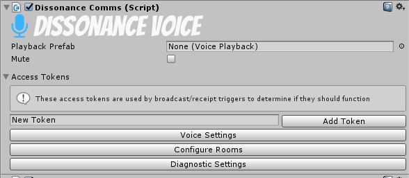

Dissonance Comms
The Dissonance Comms component is the central place to configure Dissonance. There must be an active one within the scene for Dissonance to work.

Playback Prefab
This is a prefab for the audio playback system. For every remote player who is in the voice session Dissonance will instantiate this prefab, and use it to play the voice from that player. If left blank the default playback prefab included with Dissonance will be used. Read more about the playback prefab and how you can customise it here.
Mute
This will prevent the local player from sending any voice.
Access Tokens
This is the set of access tokens which the local player has.
Voice Settings
Clicking this button opens an inspector where audio settings relating to voice may be changed.
Configure Rooms
Clicking this button opens an inspector where rooms can be created or deleted.
Diagnostic Settings
Clicking this button opens an inspector where Dissonance diagnostic settings may be changed (e.g. log levels).
Scripting
Dissonance Comms is also the central place to access Dissonance from scripts.
Readonly Properties
IsNetworkInitialised : bool
Indicates if the Dissonance network has been successfully initialised yet.
Rooms : Rooms
An object which exposes various properties and methods to do with rooms the local player is listening to. See further documentation here.
PlayerChannels : PlayerChannels
An object which exposes various properties and method to do with players the local player is speaking to. See further documentation here.
RoomChannels : RoomChannels
An object which exposes various properties and methods to do with room the local player is speaking to. See further documentation here.
Text : TextChat
An object which exposes various properties and methods to do with text chat. See further documentation here.
Players : ReadOnlyCollection<VoicePlayerState>
A list of VoicePlayerState objects, one for each remote player currently in the session. See further documentation on VoicePlayerState here.
TopPrioritySpeaker : ChannelPriority
The highest priority of all remote players currently speaking in the session.
Tokens : IEnumerable<string>
The set of tokens which the local player possesses.
MicrophoneCapture : IMicrophoneCapture
The microphone capture object which Dissonance is currently using. This may be null if Dissonance has not initialised yet or if the local instance is a dedicated server.
Properties
LocalPlayerName : String
The name of the local player, this will be initialised to a unique ID per player when Dissonance starts. This may not be changed once Dissonance has started.
PlayerPriority : ChannelPriority
The priority of the local player, if a channel is opened with no priority set this priority will be used as a default.
MicrophoneName : string
Get or set the name of the microphone to use to capture voice. This may be changed at any time, if the microphone has already begun recording with a different name it will be reset to use the new name.
PlaybackPrefab : VoicePlayback
Get or set the playback prefab which Dissonance will use to play back remote voices. This may not be changed once Dissonance has started.
IsMuted : bool
Get or set if the local player is muted (i.e. prevented from sending any voice transmissions).
IsDeafened : bool
Get or set if the local player is deafened (i.e. prevented from hearing any remote voice transmissions).
Events
OnPlayerJoinedSession : event Action<VoicePlayerState>
This event runs whenever a new player joins the Dissonance voice chat session. It is passed the object which represents the new player.
OnPlayerLeftSession : event Action<VoicePlayerState>
This event runs whenever a player leaves the Dissonance voice chat session. It is passed the object which represents the player. The object will never be touched by Dissonance again - if the player rejoins a new object will be created for them.
OnPlayerStartedSpeaking : event Action<VoicePlayerState>
This event runs whenever a remote player begins speaking in a channel which the local player can hear.
OnPlayerStoppedSpeaking : event Action<VoicePlayerState>
This event runs whenever a remote player stops speaking in all channels which the local player can hear.
This may not indicate that the remote player has actually stopped talking completely, it is possible that the local player simply stopped listening. For example if you are listening to Room A and they are talking to Room A and Room B, then when you stop listening to Room A you will receive this event (even though they are still talking to Room B) because they have stopped speaking from your point of view.
OnPlayerEnteredRoom : event Action<VoicePlayerState, string>
This event runs whenever a remote player begins listening to a new room. It is passed the object which represents the player and the name of the room.
OnPlayerExitedRoom : event Action<VoicePlayerState, string>
This event runs whenever a remote player stops listening to a room. It is passed the object which represents the player and the name of the room.
LocalPlayerNameChanged : event Action<string>
This event runs whenever the local player name is changed. Local player name may only be changed before the DissonanceComms component has been started.
TokenAdded : event Action<string>
An event which runs whenever a token is added to the local player.
TokenRemoved : event Action<string>
An event which runs whenever a token is removed from the local player.
Methods
FindPlayer(string name) : VoicePlayerState
Attempt to find the player with the given Dissonance ID. Will return null if no such player can be found.
SubcribeToVoiceActivation(IVoiceActivationListener)
Subscribes the given listener object to the voice activation detector (VAD) for the local player. When VAD detects speech the VoiceActivationStart method will be called. When the VAD stops detecting speech the VoiceActivationStop method will be called.
UnsubscribeFromVoiceActivation(IVoiceActivationListener)
Unsubscribes a previously subscribed listener object from the VAD.
SubcribeToRecordedAudio(IMicrophoneSubscriber)
Subscribes the given listener object to the microphone recorded audio after it has been preprocessed. This will receive all audio recorded by the mic whether or not it is being sent over the network. Use DissonanceComms.RoomChannels.Count and DissonanceComms.PlayerChannels.Count to determine if the audio is being sent anywhere.
UnsubscribeFromRecordedAudio(IMicrophoneSubscriber)
Unsubscribes a previously subscribed listener object from the microphone audio stream.
TrackPlayerPosition(IDissonancePlayer)
Begins position tracking for the player represented by the given object.
StopTracking(IDissonancePlayer)
Stops position tracking for the player represented by the given object.
AddToken(string)
Adds a token to the local player.
RemoveToken(string) : bool
Removes a token from the local player and returns a bool indicating if that token was removed. This will return false if the player never had the token in the first place.
ContainsToken(string) : bool
Returns a boolean value indicating if the local player has the token with the given name.
HasAnyToken(TokenSet) : bool
Returns a boolean value indicating if the local player has any of the tokens in the given TokenSet.